Bauunternehmen in Sassenburg bei Gifhorn
Vom Einfamilienhaus bis Gewerbe.
Beratung, Planung, schlüsselfertiger Neubau und Abbruch – ein Familienbetrieb in 2. Generation, der seine Projekte oft mit eigener Mannschaft umsetzt.
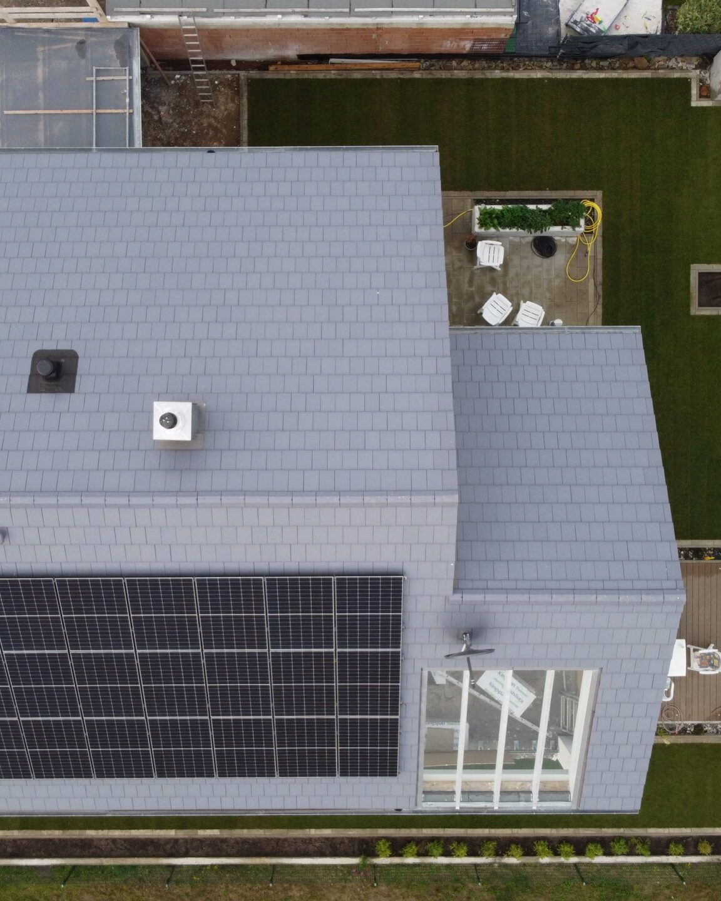
„So kann’s aussehen.“
Bautagebuch: Ein Einfamilienhaus in 16 Phasen – dokumentiert mit der Drohne, senkrecht von oben.
PlanungVor dem ersten Spatenstich
Vor Baubeginn muss zunächst eine Bauplanung vom Architekten erstellt werden. Diese muss mittels eines Bauantrags im jeweiligen Bauamt genehmigt werden. Um die Planungsphase abzuschließen, muss die Baumaßnahme von einem Statiker berechnet werden.
Bauzeitenplan · Einfamilienhaus16 Phasen bis schlüsselfertig
- 01Planung
- 02Fundamente ausheben
- 03Fundamente betonieren
- 04Bodenplatte einschalen
- 05Bodenplatte betonieren
- 06Mauerwerk anlegen
- 07Mauerwerk kleben
- 08Filigrandecke verlegen
- 09Decke betonieren
- 10Mauerwerk Obergeschoss
- 11Filigrandecke Obergeschoss
- 12Decke armieren und betonieren
- 13Richtfest
- 14Dach vorbereiten
- 15Dach eindecken
- 16Schlüsselfertig
Fundamente aushebenSchnurgerüst und Minibagger
Los geht’s. Nach Fertigstellung der Sandplatte wird ein Schnurgerüst aufgestellt. Nun können die Fundamente mit dem Minibagger entlang der Schnüre ausgehoben werden. Nach dem Ausheben werden noch Eisen und der Fundamenterder eingebaut.

Bodenplatte betonierenBetonpumpe und Rüttelpatsche
Am besten bringt der Betonmischer auch eine Betonpumpe mit, um den Beton gleichmäßig und präzise einzubauen. Wenn der Beton eingebaut ist, fahren wir die Fläche mit der Rüttelpatsche ab, um Lufteinschlüsse zu vermeiden.

Mauerwerk klebenErdgeschoss · Kalksandstein im Verband
Nun werden die großformatigen Kalksandsteine mit dem Versetzkran im Verband aufeinander geklebt. Bei Türöffnungen wird ein Sturz eingebaut. Fensteröffnungen bleiben meist deckengleich, um Platz für den Rollladenkasten zu haben.

Decke betonierenErdgeschoss
Wenn alle wichtigen Dinge in der Decke liegen, kann betoniert werden. Den frischen Beton fahren wir wieder mit der Rüttelpatsche ab, um eine möglichst gerade Deckenoberfläche zu bekommen.

RichtfestDer Dachstuhl steht
Ein paar Tage nach dem Betonieren stellen wir den Dachstuhl auf und verankern ihn in der Decke. Nach getaner Arbeit gibt’s ein Grillerchen mit allen Baubeteiligten, Familie, Freunden und Nachbarn.

Dach eindeckenOrtgang zuerst, dann die Fläche
Wir fangen mit den Dachrändern – den Ortgangziegeln – an und decken anschließend das gesamte Dach ein. Lüftungsziegel werden zwischendurch an der richtigen Stelle für die Entlüftung eingebaut.

SchlüsselfertigSo kann’s aussehen
Dach gedeckt, Photovoltaik auf dem Dach, Garten angelegt – fertig. So könnte auch Ihr Bauprojekt aussehen. Machen Sie sich ein eigenes Bild und sprechen Sie uns an.

„Saubere Ausführung. Klare Abläufe. Verlässliche Termine.“
Leistungsverzeichnis: Was wir bauen – vom Einfamilienhaus über Gewerbe bis zum Sonderbau.
Pos. 01Neubau Einfamilien- und Mehrfamilienhäuser
Durch unsere langjährige Erfahrung in der 2. Generation sind wir Ihr kompetenter Ansprechpartner – von Einfamilien- und Mehrfamilienhäusern bis zu großen Renditeobjekten.
Beratung, Planung und schlüsselfertiger Neubau: Wie ein Einfamilienhaus bei uns entsteht, zeigt das Bautagebuch Phase für Phase – von oben.
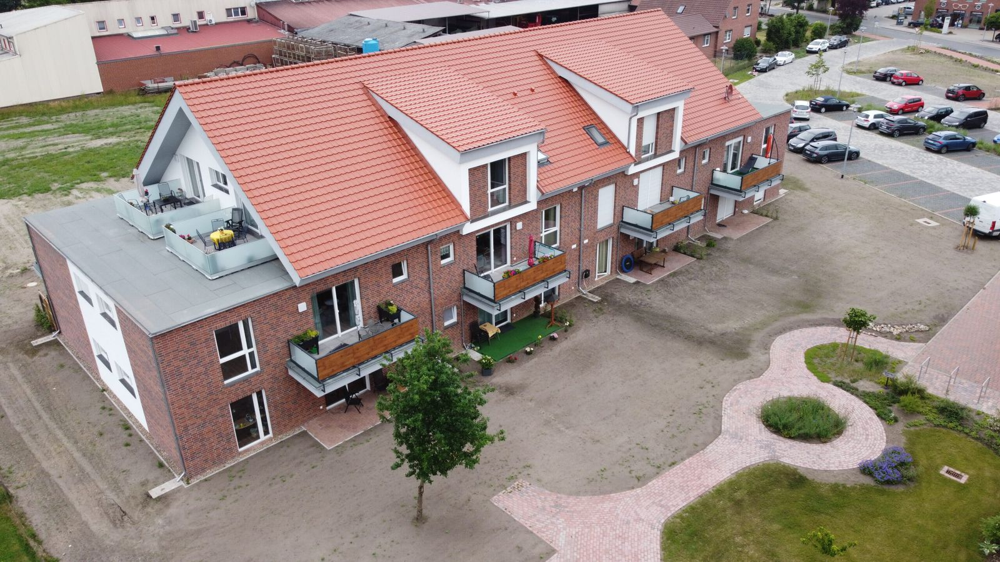
Pos. 02Gewerbe und Industrie
Zu unserem facettenreichen Repertoire gehören ebenfalls Bauten für Gewerbe und Industrie.
Mehr zu Gewerbe & Industrie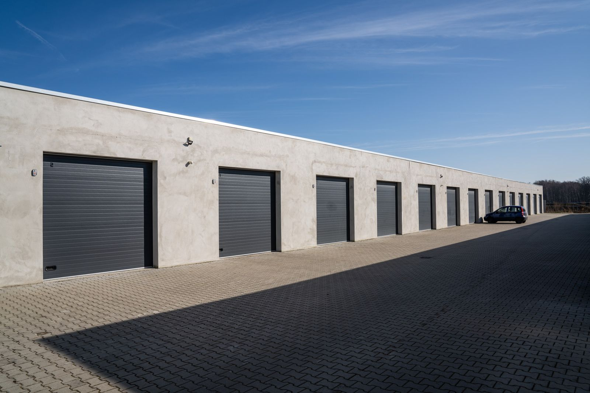
Pos. 03Sonderbauten
Sie haben ein spezielles Bauanliegen? Wir sind die Antwort! Gerne kümmern wir uns um Ihre Sonderbauten. Erfolgreich realisiert haben wir bereits Parkplätze, Brücken und andere knifflige Projekte.
Mehr zu Sonderbauten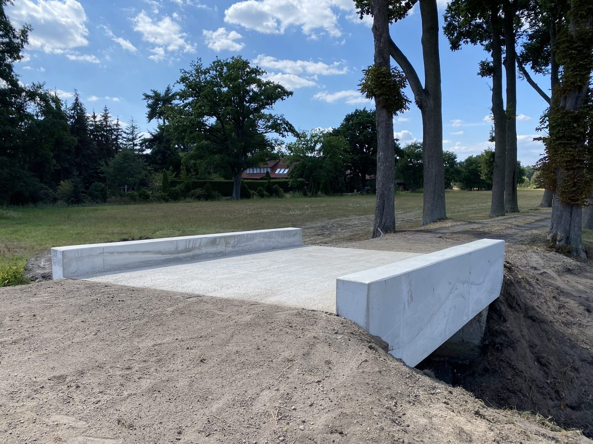
Pos. 04Abbruch
Wo ein Neubau ansteht, übernehmen wir auch den Abbruch des Bestands – wie beim Brückenbauwerk: vom alten Bauwerk bis zum neuen Überbau.
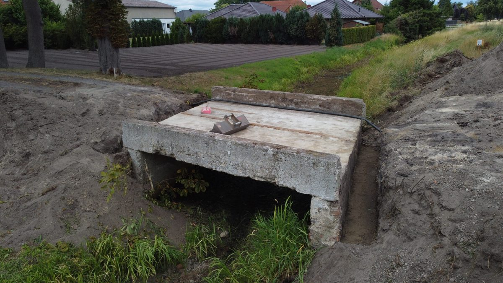
Pos. 05Hoch- und Tiefbau, Trocken- und Innenbau, Pflaster- und Gartenarbeiten
Fundamente, Bodenplatte, Mauerwerk und Decken – wie im Bautagebuch zu sehen –, dazu Trockenbau, Pflaster- und Außenanlagen.
„Jedes Projekt ist für uns einmalig und individuell.“
So läuft ein Projekt bei uns ab – vier Phasen, die jedes Bauvorhaben durchläuft.
- 01Erstgespräch & Bedarf
- 02Angebot & Zeitplan
- 03Ausführung & Abstimmung
- 04Abnahme
Warum BauSchulz
- feste Abläufe statt Chaos auf der Baustelle
- saubere Ausführung nach Fachregeln
- direkte Kommunikation – schnelle Entscheidungen
„Machen Sie sich ein eigenes Bild vor Ort.“
Referenzen: Sieben Bauvorhaben aus dem Landkreis Gifhorn und Wolfsburg – und ein Brückenbauwerk. Chronologisch von 2014 bis heute.
- 2014
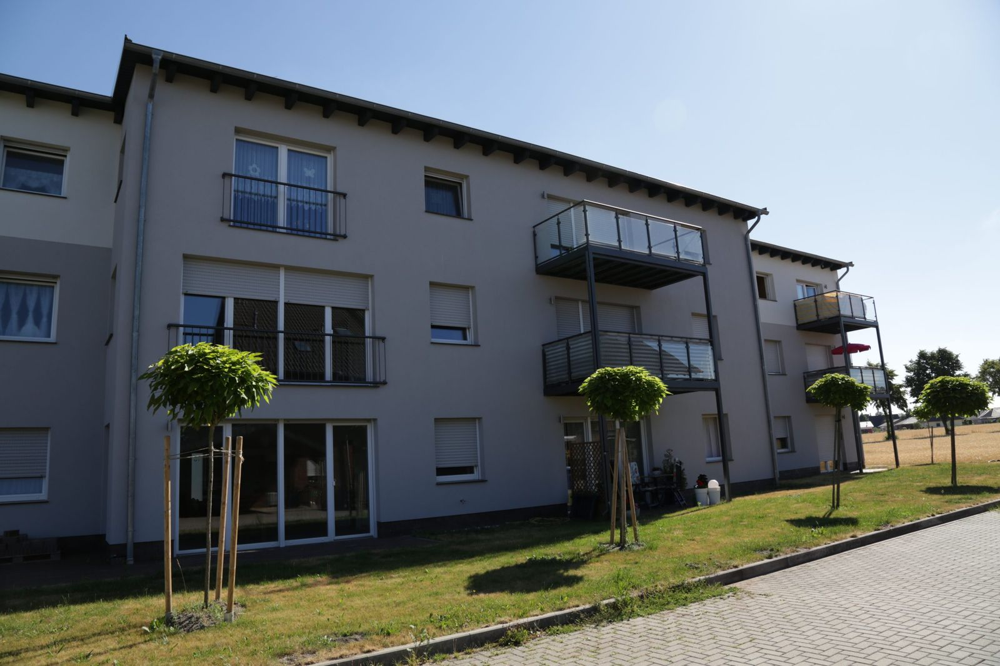
Seniorenwohnanlage WittingenWittingen · 1.400 m² - 2016
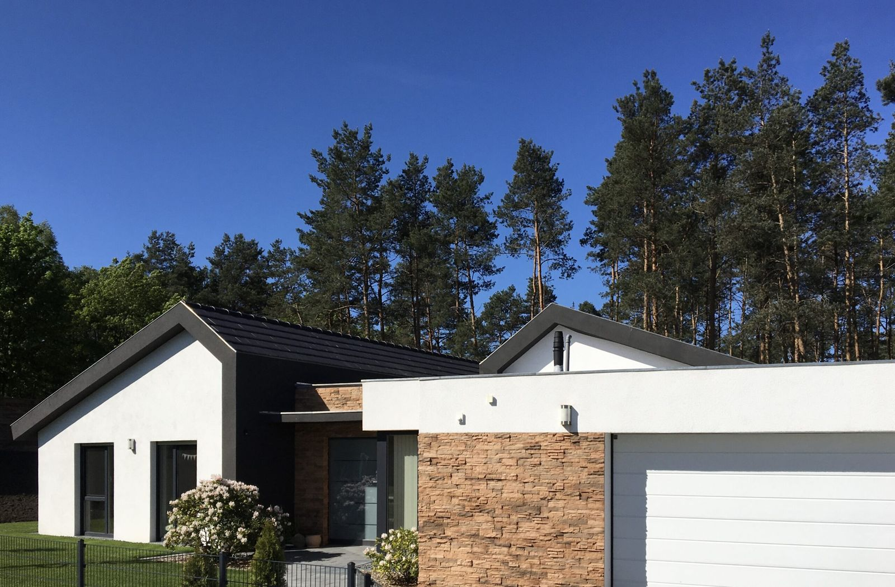
Einfamilienhaus SassenburgSassenburg · 180 m² - 2017
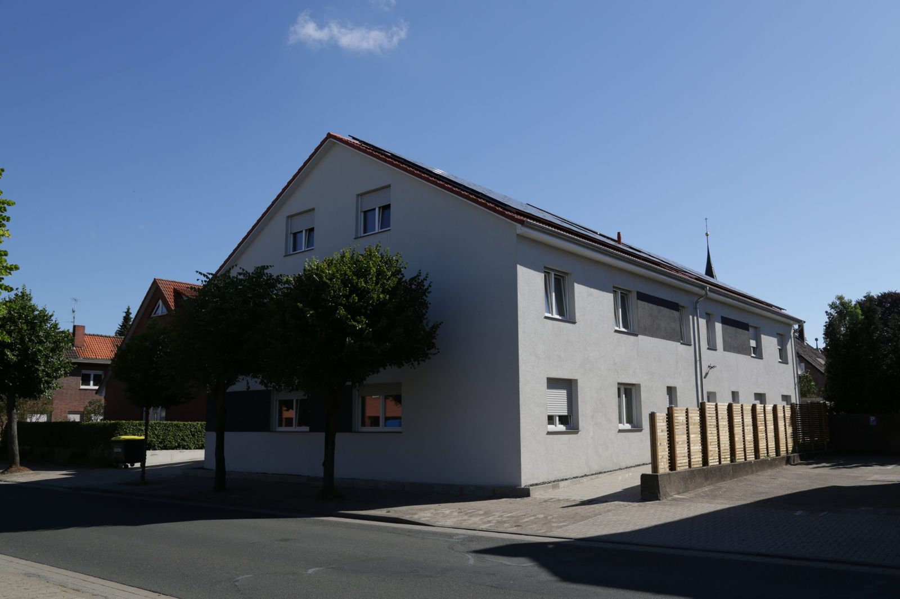
Sozialer Wohnungsbau KnesebeckKnesebeck · 885 m² - 2018Garagenpark SassenburgSassenburg · 980 m²
- 2020
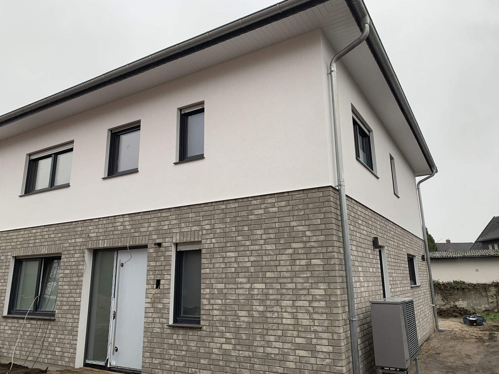
Doppelhaus GifhornGifhorn · 380 m² - 2020
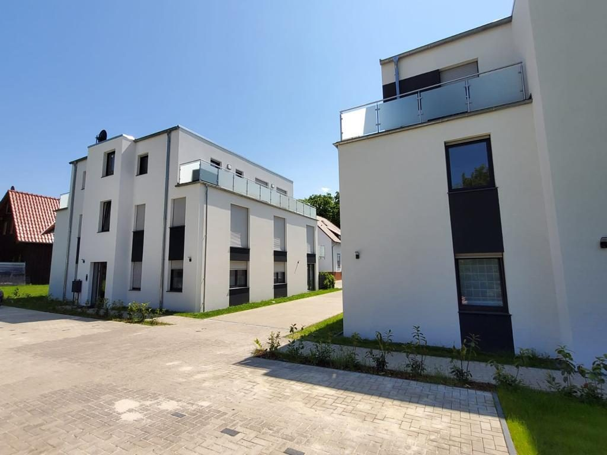
Wohnanlage Wolfsburg-EhmenWolfsburg-Ehmen · 1.000 m² - 2022Seniorenwohnanlage WahrenholzWahrenholz · 1.350 m²
- Sonderbau
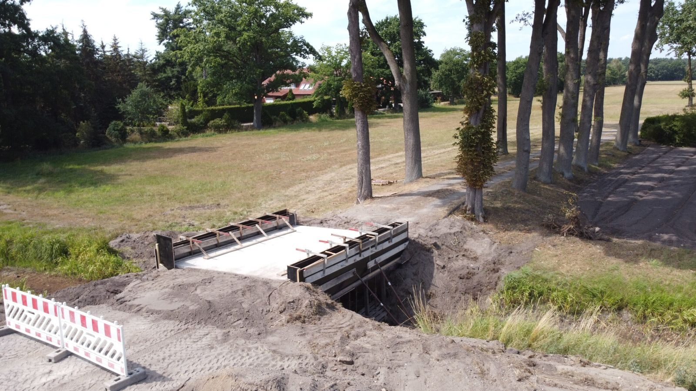
BrückeBrückenbauwerk über einen Graben
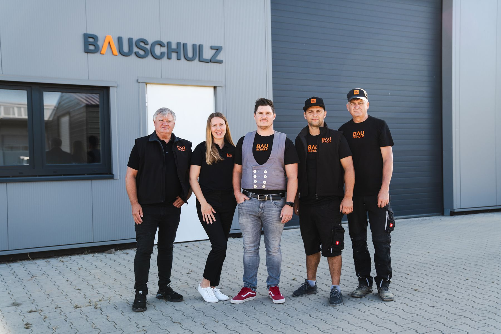
„Bauen in Tradition & Moderne.“
Bauunternehmen in 2. Generation – ein Familienbetrieb aus Sassenburg, in dem alle mit anpacken.
Bauschulz baut im Hochbau. Geführt wird der Betrieb von Denis Schulz; zu Hause ist das Unternehmen in Sassenburg im Landkreis Gifhorn.
Unsere Projekte setzen wir oft mit eigener Mannschaft um – vom Fundament bis zum Dach.
Über uns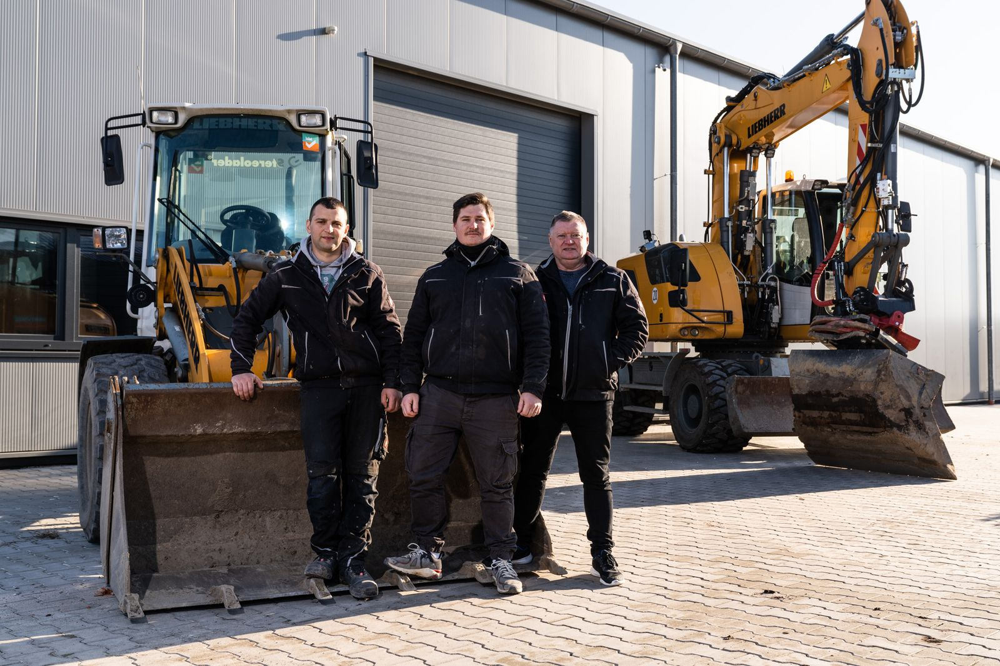
„Toller Bauprozess mit Bauschulz: Unser Hausbau inklusive Abriss dauerte nur 8 Monate. Die Firma war flexibel bei Änderungswünschen und die Baustelle stets ordentlich. Besonders beeindruckt sind wir von der handgeschliffenen Betontreppe. Bis jetzt keinerlei Probleme mit der Qualität. Sehr zufrieden mit Bauschulz!“
Was Bauherren über Bauschulz sagen – Rezensionen von Google.
„Toller Bau mit der Firma in Gifhorn! Alles lief reibungslos, Termine wurden eingehalten, und spontane Änderungen waren kein Problem. Die Zusammenarbeit war freundschaftlich und auch Jahre später stehen sie für Fragen bereit. Würde jederzeit wieder mit ihnen bauen!“
„Wir arbeiten seit 2017 mit der Fa. Schulz-Bau zusammen und sind mehr als zufrieden. Sehr zuverlässig, kompetent und stets schnell verfügbar, wenn mal was „brennt“. Kann ich nur weiterempfehlen!“
„Top Leistung von BauSchulz! Trotz Corona lief der Bau reibungslos in 5–6 Monaten. Änderungswünsche wurden problemlos umgesetzt. Ich empfehle sie gerne weiter!“
„Super professionell und kompetent. Sehr schnelle und präzise Arbeit. Bei Fragen und Anliegen immer zur Stelle.“
„direkte Kommunikation – schnelle Entscheidungen“
Anfrage: Erzählen Sie uns von Ihrem Bauvorhaben – wir melden uns.
Referenz-Karte: Wo wir gebaut haben.
Karte auf OpenStreetMap öffnen